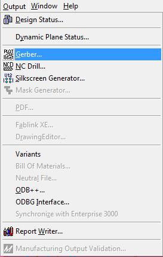
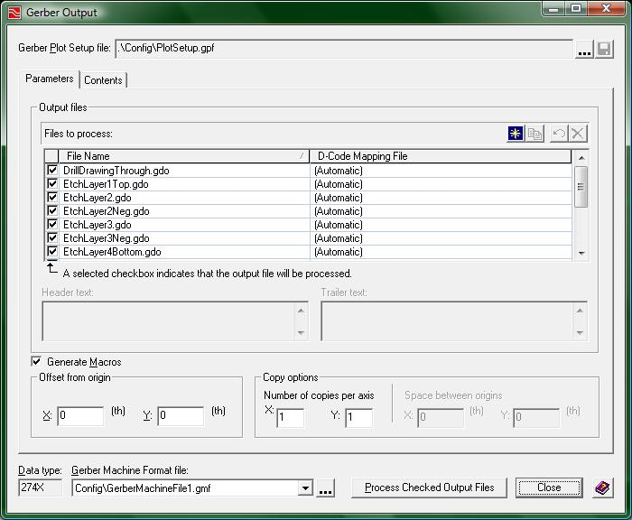

Gerber Generation:
In this tutorial you will learn the proper process to create the final files you need in order to have your board fabricated.
There are several other processes you will need to complete before you can produce Gerber files. In addition to those other processes, you will also need a “Gerber Plot Setup” file that should be provided by your instructor. You must process the following list in order before you will be ready to produce Gerber files:
If you have skipped ahead and have not done any of the previous steps you can click on any one of the links above to be taken to the tutorial for that process.
Once you have run all three of the above processes in the order specified, it is time to set up your project to produce Gerber files.
To open the Gerber Generator window, click on the menu Output -> Gerber… as displayed in the following image.

(1-output_menu.jpg)
Now you should be presented with the following window:

(2-Gerber_window.jpg)
At the top of the screen you will see the field for the Gerber Plot Setup file. Click the “…” button and browse for the Gerber setup file provided to you by your instructor.
After you have browsed for the file and clicked the "OK" button in the browse window, you will find that the all of the Gerber settings necessary for your project will load up. The last step is to click the “Process Checked Output Files” button at the bottom near the center of the window to produce all of your Gerber files.
Now you have a set of Gerber Files for your project!!! You should use a Gerber file viewer to make sure your project has been made correctly. Viewmate is a free Gerber file viewer that may be available to you.